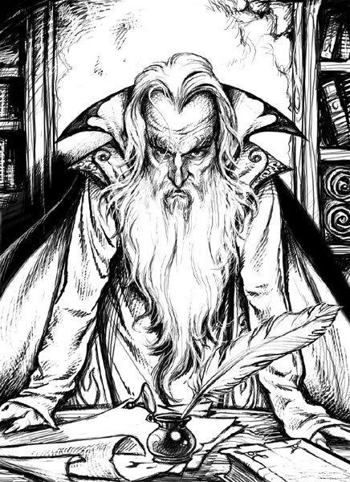
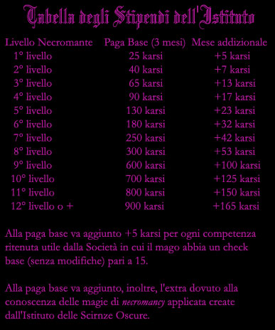

L'Istituto di Arti Oscure è una piccola ma potente accademia di magia specializzata esclusivamente nella scuola necromancy. La scuola non è riconosciuta dal Circolo del Potere e i suoi membri sono quindi considerati rinnegati dal Circle of Power, la scuola ha però ottime relazioni e convenzioni con il Circolo dei Summoner di Pergar, ciò grazie alla politica di tolleranza che lo stesso segue nonostante faccia parte del Circolo del Potere. Fanno parte dell'Istituto una quarantina di negromanti di vario livello, la scelta di nuovi membri è effettuata direttamente dal Gran Maestro di Arti Oscure fra persone che abbiano i requisiti mentali e personali in grado di dedicare la loro intera esistenza all'Istituto e agli studi magici che ivi si compiono (molti infatti sono scelti fra giovani orfani senza forti legami familiari o interessi che possano in futuro distoglierli). Gli insegnamenti fino al raggiungimento del 1° livello sono totalmente gratuiti ma una volta raggiunto questo traguardo sarà il lavoro che i maghi svolgeranno all'interno della Società della Scienza a permettergli di pagare il prosieguo degli studi magici.
Il negromante di più alto livello dell'Istituto, ed in caso di parità il più anziano di età, ottiene di diritto il titolo di Gran Maestro di Arti Oscure (attualmente l'incarico è ricoperto da Vargarn il Nero) che gestisce l'Istituto ed è anche membro di diritto del Consulto delle Scienze.
I negromanti appartenenti all'Istituto sono legati alla Società della Scienza da un vincolo strettissimo (contratto di apprendimento oscuro) che li obbliga al rispetto delle regole dell''Istituto per tutta la vita. In particolare hanno un vincolo di assoluta segretezza in base al quale non possono rivelare le attività svolte all'interno dell'Istituto e per la Società, hanno l'obbligo di lavorare nell'Istituto per un periodo minimo di 90 giorni annui, hanno l'obbligo di utilizzare il tempo non lavorativo per accrescere la loro esperienza, per effettuare ricerche e per dedicarsi agli studi di magia della scuola necromancy, infine hanno il dovere di obbedire alle direttive che il Gran Maestro di Arti Oscure impartisce loro e alle regole dell'Istituto di Arti Oscure.

I negromanti appartenenti all'Istituto alla fine di ogni anno devono indicare alla Società della Scienza per quanti mesi lavoreranno nell'anno successivo (con un minimo obbligatorio di 3 mesi). In base a questa scelta saranno retribuiti mensilmente con uno stipendio che cresce a seconda della crescita del loro impegno lavorativo secondo questa tabella :

Alla fine di ogni anno di lavoro il negromante avrà cumulato una certa quantità di energia negativa nel suo corpo, pari a 3d10 punti negativi + 2 per livello nei primi 3 mesi e 1d12 punti aggiuntivi per ogni mese di lavoro supplementare.
Inoltre dovrà effettuare un tiro salvezza contro raggio della morte con bonus di +1 se lavora 3 mesi, e una penalità addizionale di -1 per mese di lavoro aggiuntivo. Qualora lo fallisce avrà accumulato 1 punto follia.
Qualora il negromante per qualsiasi motivo non riuscirà a lavorare per tutto il periodo per il quale si è impegnato, subirà un richiamo ufficiale e dovrà risarcire (a fine anno dopo aver ricevuto regolarmente tutti gli stipendi dovuti) alla Società della Scienza una cifra pari al suo stipendio mensile /10 per ogni giorno di lavoro mancato.
Coloro stipulano il contratto di insegnamento oscuro e superano il corso di base (divenendo maghi ed imparando la magia read magic) assumono il titolo di Ricercatori Oscuri. Sono in effetti maghi rinnegati dal Circolo del Potere che all'interno dell'Impero Scuro sono molto rispettatati e temuti, specie dal popolo, per l'alone di mistero che li avvolge. Devono rispettare alcune rigide regole che la Società della Scienza impone loro:
* Devono
imparare esclusivamente la magia insegnata loro dall'Istituto di Arti Oscure,
secondo le regole ed i costi da questo previsti.
* Possono accedere a magie provenienti da qualsiasi altra fonte solo con
l'espresso permesso dato loro dal Gran Maestro
di Arti Oscure.
* Devono utilizzare tutte le loro conoscenze, sia magiche che comuni, a favore
dell'Istituto di Arti Oscure, senza richiedere il pagamenti di alcuna somma
supplementare rispetto allo stipendio dovuto loro in base al contratto.
* Non devono rivelare in nessun caso e per qualsiasi motivo le attività svolte
da loro o dagli altri componenti nell'ambito della Società della Scienza.
* Devono svolgere la propria attività professionale in qualsiasi laboratorio ed
in qualsiasi zona l'Istituto stabilisca debbano recarsi. Tutte le spese di
trasferimento sono a loro carico.
* Devono svolgere la propria attività lavorativa e rispettare i dettami del
contratto di insegnamento oscuro fino a che il Gran Maestro
di Arti Oscure non decida
di scioglierli dal vincolo contrattuale.
I Ricercatori
Oscuri assumono di diritto
il titolo di Scienziati
della Non Vita quando
raggiungono i seguenti requisiti:
1) Abbiano
raggiunto il titolo di Scienziato della ricerca negativa nel primo ed nel
secondo livello di potere
3)
Una volta soddisfatti i precedenti requisiti devono decidere di superare la Prova
Oscura. Quando si decidono
dovranno recarsi da soli nei sotterranei dei laboratori dell'Istituto dove è
ubicato un piccolo dungeon. Le porte si chiuderanno dietro il mago il quale
dovrà, recuperare la sua veste da Scienziati della Non Vita per poi uscirne
vivo. La prova si considera fallita in caso di morte, resa oppure fuga dal
dungeon. In questo caso non potrà ripetere la prova prima che sia trascorso un
anno. In nessun caso potrà ripetere la prova più di tre
volte.
Gli Scienziati
della Non Vita sono molto
temuti e considerati nella società pergariana, costoro ottengono ruoli
direttivi nell'Istituto di Arti Oscure dirigendo i lavori dei Ricercatori
Oscuri. Ottengono un bonus del +10% sullo stipendio pagato loro dall'Istituto.
Inoltre, in base alla Legge Imperiale, gli Scienziati
della Non Vita sono
riconosciuti come cittadini pergariani Sublimi.
Incantesimi dell'Istituto di Arti Oscure
Si noti che il costo indicato alla destra delle magie è espresso in Karsi ed è quello previsto per un singolo accesso alla magia prescelta, qualora il mago quindi fallisca nella prova per impararla dovrà ripagare interamente il prezzo della magia. Il mago, però, ha la possibilità di pagare un accesso libero alla magia ad un costo pari al 150% di quello base, in questo caso potrà accedere alla magia un numero indefinito di volte senza pagare alcuna altra cifra all'Istituto.
|
INCANTESIMI
DI 1° LIVELLO |
|||
|
Autopsy
90 |
|||
|
Blinding
Touch
100 |
|||
|
Deforest
80 |
|||
|
Detho’s
Delirium
75 |
|||
|
Preserve
Corpse
70 |
|||
|
Exterminate
80 |
|||
|
Wither
80 |
|||
|
Corpse
Link
150 |
|||
|
Decompose
Corpse
175 |
|||
|
Lhaeo’s
Distant Bandage
190 |
|||
|
Painful
Wounds
200 |
|||
|
Ray
of Fatigue
210 |
|||
|
Bleeding
Touch
300 |
|||
|
Chill
Touch
280 |
|||
|
Little
Death Area
350 |
|||
|
Mirror
of Death
325 |
|||
|
Narwal’s
Blistering Pain
280 |
|||
|
Putrify
Wounds
300 |
|||
|
Skeletal
Grasp
310 |
|||
|
Wall
of Darkness
290 |
|||
|
Whisper’s
Hands of Darkness
275 |
|||
|
Animate
Dead Animals
390 |
|||
|
Familiar
Death Crow
500 |
|||
|
Least Raising of Comatose* 450 |
|||
|
Little
Death
475 |
|||
|
Skeleton
425 |
|||
|
Zombie
425 |
|
INCANTESIMI
DI 2° LIVELLO |
||||||||||||||||||||||||
|
|
INCANTESIMI
DI 3° LIVELLO |
|||||||||||||||||||||||
|
Least Raising of Comatose
| Livello di potere e grado | 1° livello di potere, 4° grado |
| Tipo di necromancy | Bianca |
| Guadagno addizionale | +10 karsi al mese |
| Raggio | Tocco |
| Componenti | S,M |
| Durata | Istantanea |
| Casting Time | 1 round |
| Area d'effetto | 1 creatura |
| Tiro Salvezza | Speciale |
Con questo incantesimo il mago prova a rianimare una creatura che sia andata in stato di coma. Si noti che deve trattarsi di un coma ormai già stabilizzato altrimenti la magia non sortirà alcun effetto. Dopo il lancio della magia la creatura dovrà superare un tiro salvezza contro morte (modificato dal bonus di costituzione ai punti ferita), se il tiro riesce la creatura si trova sveglio a 1 punto ferita come se avesse ottenuto una cura magica (dovrà riposare come da regole), se invece fallisce resterà in coma e non potrà più usufruire di questa magia. Se fallisce con un tiro naturale di 1, oltre a non poter usare più la magia, subirà 1d10 danni (si consideri che raggiunti i -10 la creatura è morta definitivamente). Il componente materiale è un'ampolla di sali rari da 15 g.p..
Dark Body Empowering
| Livello di potere e grado | 2° livello di potere, 4° grado |
| Tipo di necromancy | Grigia |
| Guadagno addizionale | +30 karsi al mese |
| Raggio | Tocco |
| Componenti | V,S,M |
| Durata | Permanente |
| Casting Time | 3 ore |
| Area d'effetto | 1 creatura |
| Tiro Salvezza | Speciale |
Con questa magia il caster prova a potenziare il fisico della creatura oggetto della stessa al fine di aumentare i suoi punti ferita permanentemente. Per potersi sottoporre a questa operazione la creatura deve avere almeno 20 punti ferita naturali (senza bonus di oggetti magici) altrimenti morirà sotto i ferri. Gli effetti si ottengono attraverso la sostituzione di alcuni tessuti muscolari della creatura con altri tessuti selezionati e potenziati tramite la magia. Il negromante deve cooperare con un medico (che sia un'altra persona) il quale deve effettuare materialmente l'operazione di sostituzione muscolare. L'operazione dura 3 ore al termine delle quali la creatura dovrà evitare un fallimento critico (1 su 1d20) per sopravvivere al trauma operatorio (in caso di fallimento si avrà morte immediata della creatura). Se la creatura sopravvive il medico dovrà superare con successo un check di healing. Se non lo supera l'operazione sarà riuscita ma non avrà avuto alcun risultato.Durante l'operazione il mago non deve essere disturbato, se per qualsiasi motivo non riesce a terminare con successo la magia l'operazione chirurgica sarà riuscita ma non avrà avuto alcun risultato. Se tutto riesce la creatura riceverà permanentemente 5 punti ferita addizionali (naturali, non magici). In ogni caso una creature può sottoporsi un'unica volta a questo drammatico intervento. I componenti materiali della magia sono i muscoli preparati dal costo di 1500 g.p. Il medico inoltre dovrà utilizzare una comune sala operatoria attrezzata.
Muscle Implantation
| Livello di potere e grado | 3° livello di potere, 4° grado |
| Tipo di necromancy | Grigia |
| Guadagno addizionale | +50 karsi al mese |
| Raggio | Tocco |
| Componenti | V,S,M |
| Durata | Permanente |
| Casting Time | 1 day |
| Area d'effetto | 1 creatura |
| Tiro Salvezza | Speciale |
Con questa magia il caster prova a potenziare il fisico della creatura oggetto della stessa al fine di aumentare la sua forza permanentemente. Gli effetti si ottengono attraverso la sostituzione integrale dei principali tessuti muscolari della creatura con altri tessuti selezionati e potenziati tramite le arti oscure. Il negromante deve cooperare con un medico (che sia un'altra persona) il quale deve effettuare materialmente l'operazione di sostituzione muscolare. L'operazione dura 1 giorno al termine delle quali la creatura dovrà evitare un fallimento critico (1 su 1d20) per sopravvivere al trauma operatorio (in caso di fallimento si avrà morte immediata della creatura). Se la creatura sopravvive il medico dovrà superare con successo un check di healing con -2 supplementare di penalità. Se non lo supera l'operazione sarà riuscita ma non avrà avuto alcun risultato inoltre la creatura dovrà evitare un altro fallimento critico (1 su 1d20) per sopravvivere all'errore operatorio.Durante l'operazione il mago non deve allontanarsi dalla sala operatoria, se per qualsiasi motivo non riesce a terminare con successo la magia l'operazione chirurgica sarà riuscita ma non avrà avuto alcun risultato. Se tutto riesce la creatura riceverà permanentemente 1 punto supplementare di forza anche oltre i limiti razziali ma dovrà riposare prima di potersi muovere almeno 30 giorni in convalescenza. In ogni caso una creatura può sottoporsi un'unica volta a questo drammatico intervento. I componenti materiali della magia sono i muscoli preparati dal costo di 3000 g.p. Il medico inoltre dovrà utilizzare una speciale sala operatoria attrezzata per questo tipo di intervento dal costo di 8000 g.p. (80 g.p. di manutenzione al mese) di almeno 30 metri quadri (per operare creature large +2000 g.p., 20 g.p. di manutenzione mensile, 40 metri quadri, creature più grandi non possono sottoporsi a tale intervento). In ogni caso il fisico della creatura che si sottopone all'intervento subisce un impatto valutabile come un invecchiamento di 1 anno di vita.
The Draining Machine
| Livello di potere e grado | 4° livello di potere, 3° grado |
| Tipo di necromancy | Nera |
| Guadagno addizionale | +80 karsi al mese |
| Raggio | Tocco |
| Componenti | V,S,M |
| Durata | Istantanea |
| Casting Time | 1 round |
| Area d'effetto | 1 creatura |
| Tiro Salvezza | Speciale |
Con questa magia il caster trasferisce energia vitale da una creatura ad un'altra al fine di curarne le ferite. Il risucchio è estremamente doloroso (nessuna creatura si sottoporrà allo stesso volontariamente) ma la macchina utilizzata per effettuarlo è dotata di legacci e catene per immobilizzare la creatura. Il negromante con questa magia trasferisce 1 punti ferita per livello di lancio dalla vittima al beneficiario. La vittima subirà quindi queste ferite che dovranno poi essere normalmente guarite. Possono sottoporsi a tale magia (sia come vittima che come beneficiario) solo le creature la cui forma di vita si basa sull'energia positiva e che abbiano un copro umanoide dotato di liquido ematico Ogni volta che si lancia questa magia la vittima che perde punti ferita dovrà evitare un fallimento critico (1 su 1d20) per sopravvivere all'enorme dolore (se fallisce morirà alla fine della magia ma il trasferimento sarà comunque avvenuto). Non è possibile risucchiare punti ferita facendo scendere quelli della vittima oltre lo 0, se viene usato un risucchio più potente dei punti ferita della vittima, infatti, saranno trasferiti solo i punti ferita antecedenti allo stato comatoso e la vittima morirà immediatamente (senza passare dal coma) appena raggiunti i 0 punti ferita. Il macchinario necessario deve essere alloggiato in una sala apposita di almeno 30 metri quadri e ha un costo pari a 10000 g.p. (con una manutenzione di 50 g.p. al mese) per alloggiare creature fino a size massima medium ( per alloggiare size large +5000 g.p. e 25 g.p. di manutenzione, size maggiori non possono essere oggetto di questa magia) e può essere riutilizzato senza problemi.